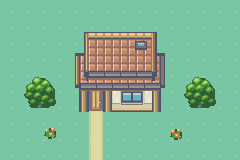
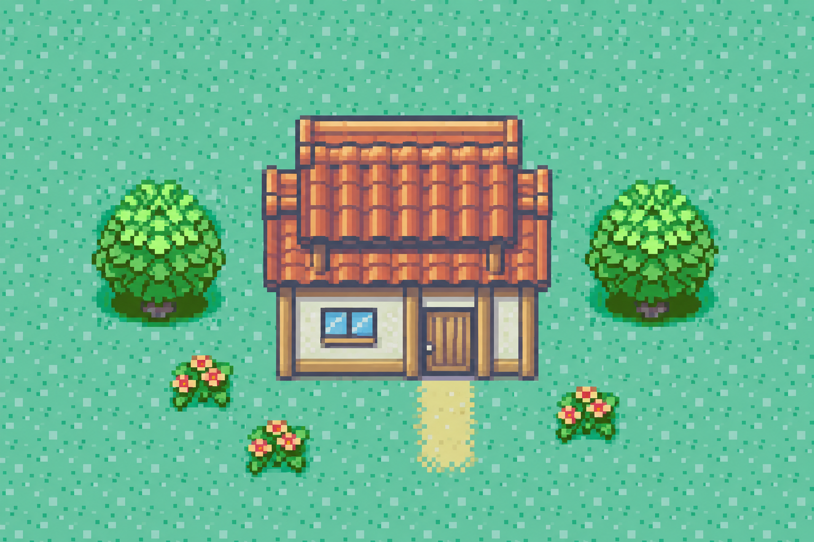

ENVIRONMENT STYLE PROOF
Back to the visual reference.
A focused house-and-tree sample after the first draft missed the Emerald-era style.
Original Critz artwork. No approval is assumed; the playable game and saves are unchanged.
CURRENT REVIEW / NATIVE PIXEL ART
A house. Two trees. One clear test.

Layered roof planes and deep eaves replace the flat roof slab. A short pale wall, cool structural shadows and cyan window separate the materials. The trees have compact crowns, linked leaf clusters, and mostly hidden trunks.
{kind=link}
{kind=link}
{kind=link}
Pixel size is 1× on narrow screens and 4× on wide screens. The art still needs your judgment on its style; dimensions alone do not establish a match.
DIRECTION STUDY / NOT A PRODUCTION TILESET
The revised image study.

Made with imagegen using Emerald source assemblies as visual reference. This generated illustration has not passed the native pixel export contract. The exact-resolution sample above is a separate original pixel construction.
WHAT HAPPENS NEXT
Settle the style, then rebuild the towns.
Review the house proportions, roof shading, leaf clusters and color relationships. Once the direction is accepted, apply it to reusable indoor/outdoor pieces and the Rootport, forest-route and Liarsville proposals. Character scale and movement remain separate review gates.
Full review notes ↗Rejected revision 1 — retained for comparison only
The first tile kit and town maps were rejected for failing to capture the intended Emerald style. They are not accepted art and must not be integrated into gameplay.
{kind=link}
{kind=link}
{kind=link}
{kind=link}
{kind=link}
{kind=link}